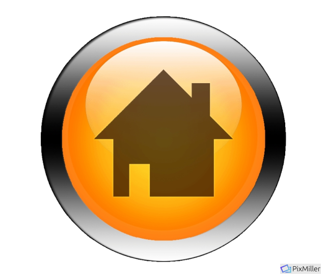

About me 😉
"The path from dreams to success does exist.
May you have the vision to find it, the courage to get on to it, and the perseverance to follow it."
Kalpana Chawla
My name is Aya Mutlak , I am 27 years old and I live in Kaabiya village , I am married and have 4 children.
In school I loved studying math, chemistry and biology , and I was realy good in these subjects ,
and I always dreamed that after high school I would continue my education in subjects that is related to math or chemistry , I actually wanted to be an engineer.
I graduated high school with an average of 96.
I finished my B.Ed as an Arabic teacher In the "Sakhnin college" ,
after that I extended my teaching certification at "The arab academic college of Education" in Haifa with an average of 93.
I worked as a temporary teachers and in elementary school for many years and I gave a private lessons. I don't see myself there and I don’t see the fuater for me there...
Today I join to course QA automation I want to achieve my dream, and to fulfill myself.
I have the motivation to start working in this field.
Besides I am a hard worker, My family is supportive and ready to help me.